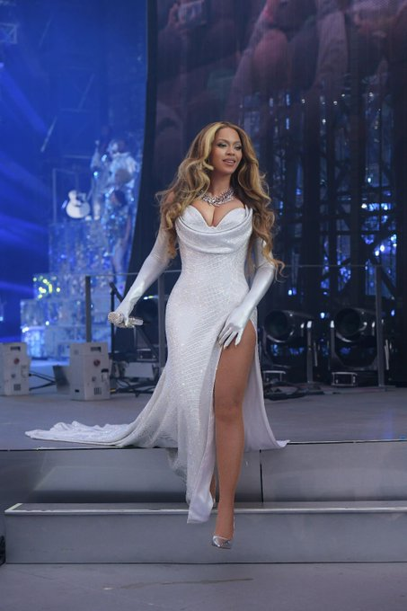
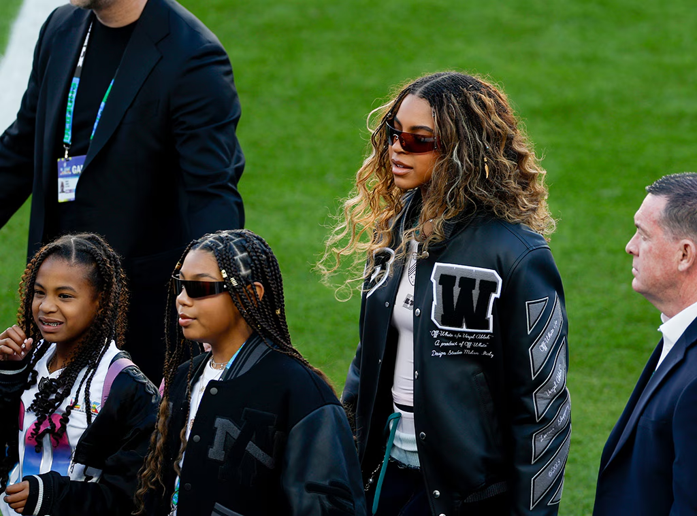
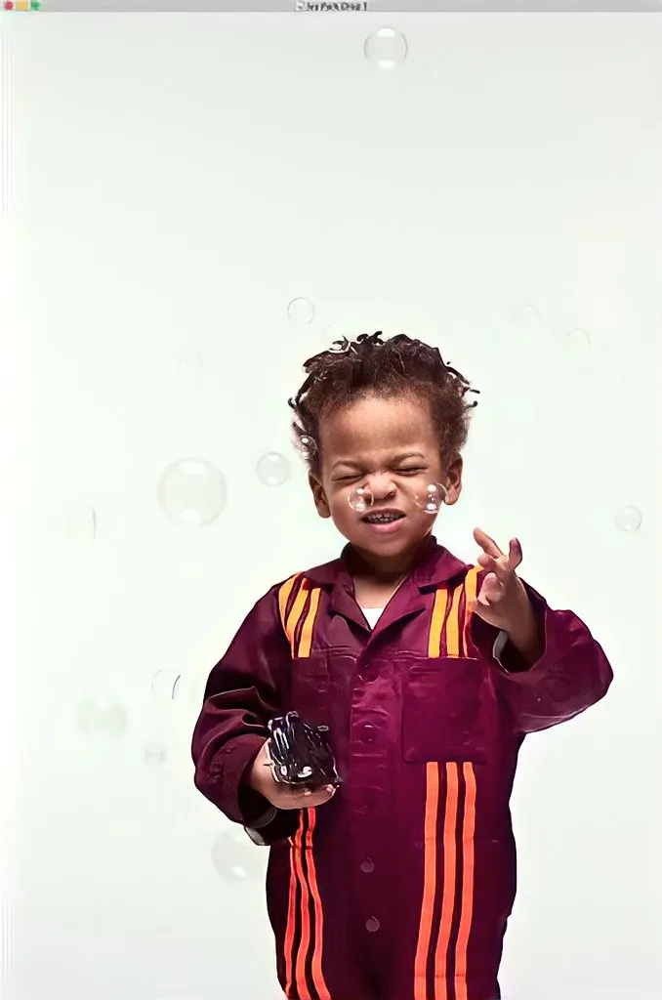

About the Knowles-Carter Family
The Knowles-Carter family are a famous family well know for much sucess in the business industry and have a lot of cultural influence as well.

Beyonce Giselle Knowles-Carter born September 4, 1981 is a world known singer, songwriter, actress and business women whis is recognized as one of the best-selling artists whoo made 35 grammy awards.
Shawn Corey carter is a legendaryu rapper, song writer, producer and enterpreneur who was born on December 4, 1969. Fun fact: He is the the first hip-hop billionair. He is the husband to Beyonce and both have 3 beautiful children together.

Blue Ivy Carter is the eldest daughter to Beyonce and Jay-Z. She was born on January 7, 2012. She was famous since birth and is well know for dancing on stage with her mom Beyonce for world tours like cow boy cater and others.
Rumi is the younger siste to Blue Ivy. She was born a twin with Sir Carter. Fun fact is that she was named Rumi by her grandparents after the Persian poet. She was born on June 13, 2017 and is the older twin.

Sir Carter is the only son to Beyonce and Jay-Z and is the twin to Rumi. Less information is shared about him but recently he was seen on media but the reasons are probably only known to the parents but assumptions have been made by the media. He was born on June 13, 2017 after Rumi.